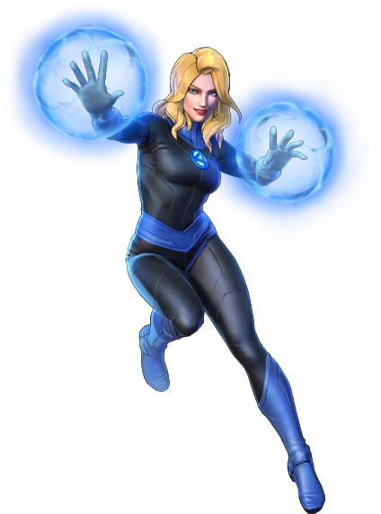
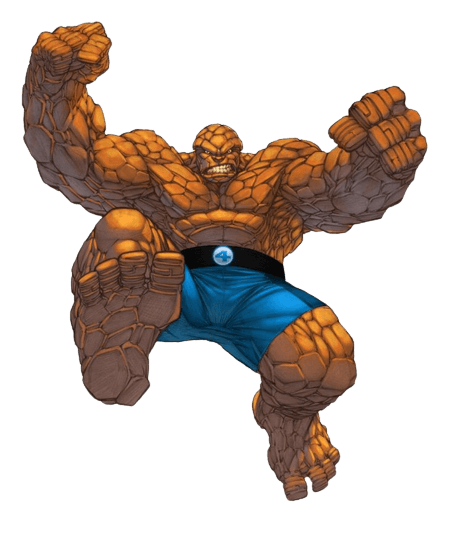
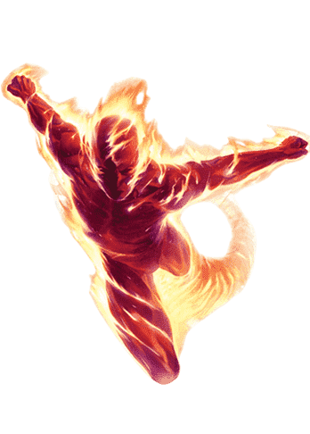

Senhor Fantástico é conhecido também como Reed Richards. Juntamente com Ben, Susan e Johnny Storm, ele forma o Quarteto Fantástico, um grupo de super-heróis da Marvel. A princípio, Reed Richards era um homem comum e sem poderes. Entretanto, sua inteligência era fora do normal, tendo ele construído uma nave estelar.

A Mulher Invisível, alter-ego de Susan "Sue" Richards, é uma super-heroína de histórias em quadrinhos da editora Marvel Comics. Quando foi criada e durante vários anos chamou-se Garota Invisível. No filme do Quarteto Fantástico de 2005 foi interpretada por Jessica Alba e no de 2015, por Kate Mara.
O Coisa (Benjamin Jacob Grimm) é um personagem de quadrinhos do universo Marvel, um dos fundadores do Quarteto Fantástico. Foi criado por Stan Lee e Jack Kirby. Seu grito de guerra "it's clobberin ' time!" (que no Brasil foi traduzido como "Tá na hora do pau!") é um dos bordões mais conhecidos dos quadrinhos.
Tocha Humana, também conhecido como Jim Hammond é um personagem de quadrinhos americanos da Marvel Comics. O personagem foi criado pelo escritor-desenhista Carl Burgos e publicado pela primeira vez na revista Marvel Comics # 1 (outubro de 1939)[1] - primeira revista em quadrinhos da Timely Comics, uma predecessora da Marvel Comics nas décadas de 30 e 40.[2] Durante esse período, conhecido por historiadores e fãs como a Era de Ouro dos Quadrinhos.
